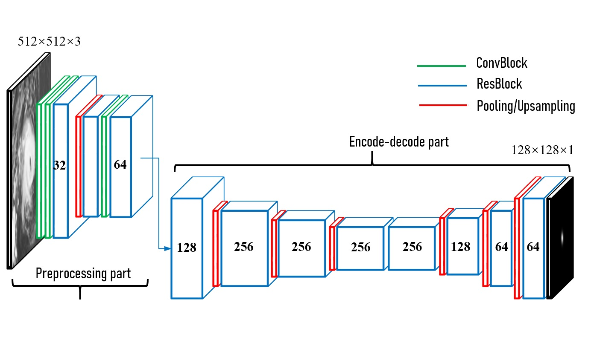
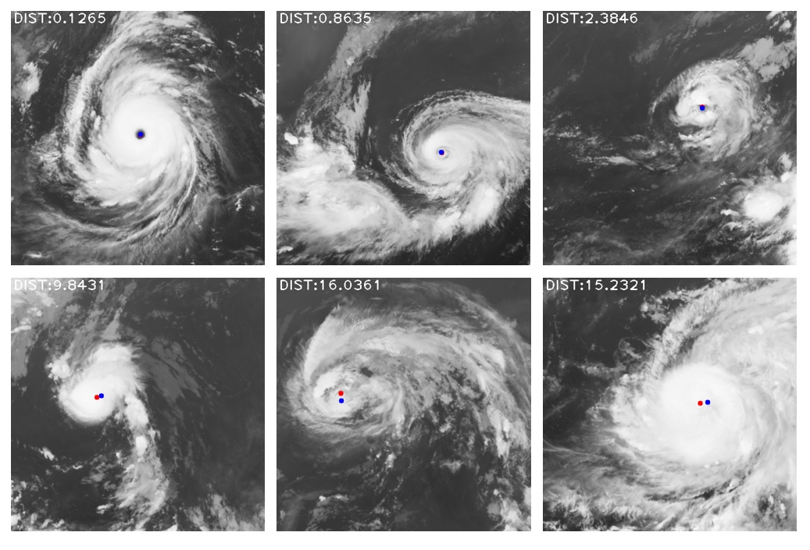

TCLNet: Learning to Locate Typhoon Center using Deep Neural Network
Chongqing University of Technology

Abstract
The task of typhoon center location plays an important role in typhoon intensity analysis and typhoon path prediction. Conventional typhoon center location algorithms mostly rely on digital image processing and mathematical morphology operation, which achieve limited performance. In this paper, we proposed an efficient fully convolutional end-to-end deep neural network named TCLNet to automatically locate the typhoon center position. We design the network structure carefully so that our TCLNet can achieve remarkable performance base on its lightweight architecture. In addition, we also present a brand new large-scale typhoon center location dataset (TCLD) so that the TCLNet can be trained in a supervised manner. Furthermore, we propose to use a novel TCL+ piecewise loss function to further improve the performance of TCLNet. Extensive experimental results and comparison demonstrate the performance of our model, and our TCLNet achieve a 14.4% increase in accuracy on the basis of a 92.7% reduction in parameters compared with SOTA deep learning based typhoon center location methods.
Examples

Downloads
Citation
@inproceedings{
title={TCLNet: Learning to Locate Typhoon Center using Deep Neural Network},
author={Tan, Chao},
booktitle={2021 IEEE International Geoscience and Remote Sensing Symposium (IGARSS)},
year={2021},
organization={IEEE}
}